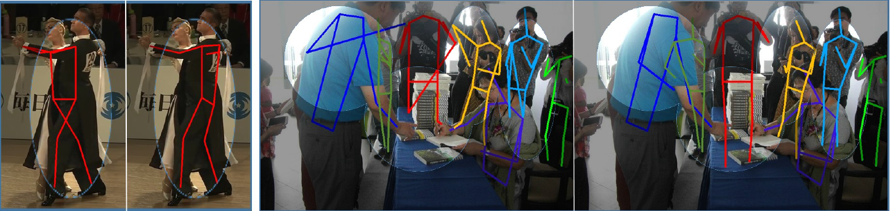
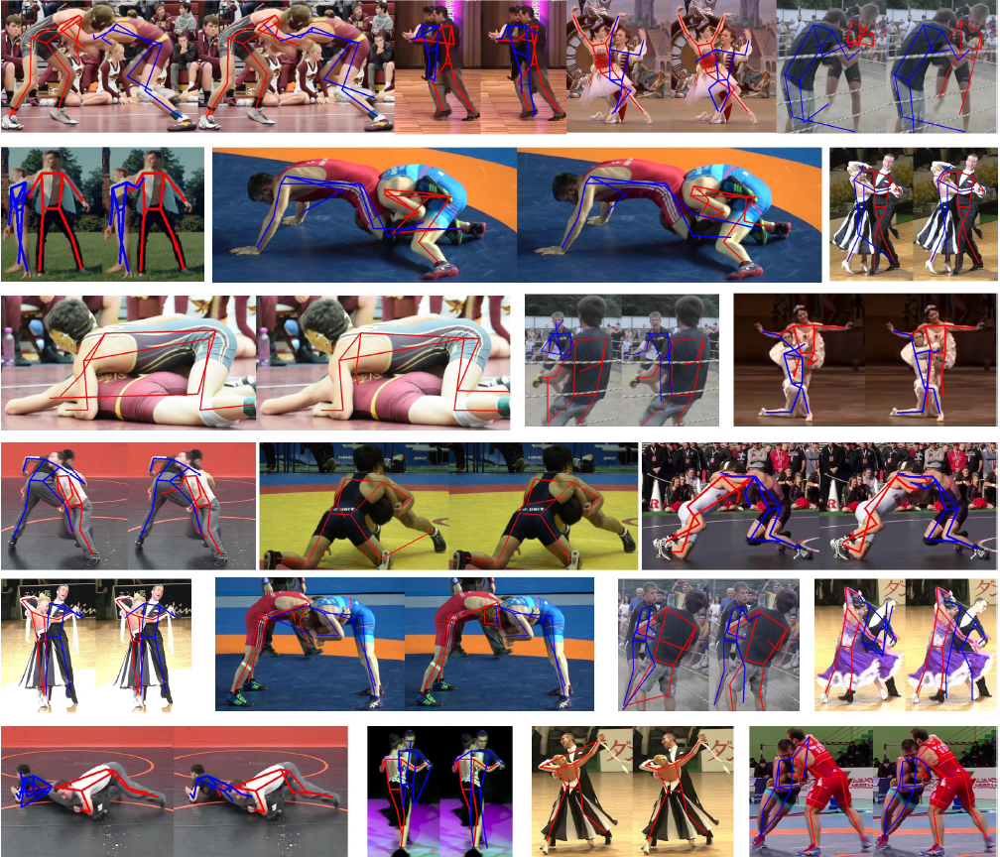
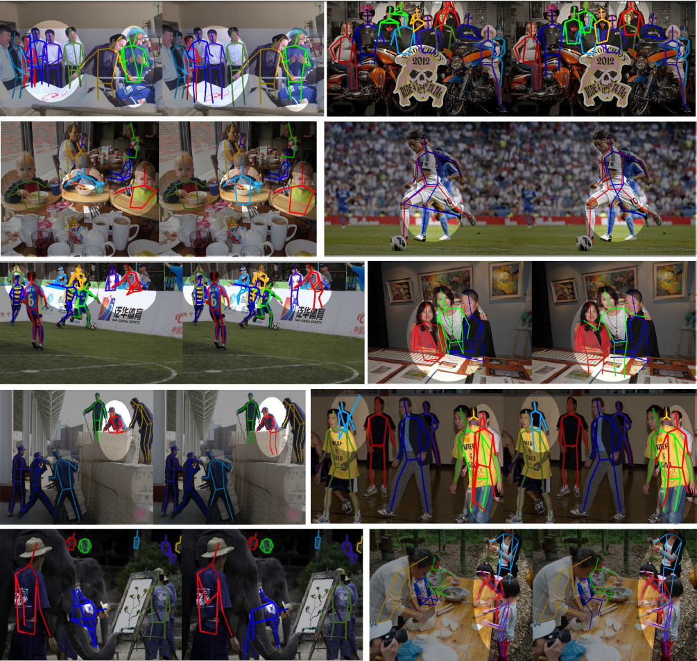

Peeking into occluded joints:
A novel framework for crowd pose estimation
A novel framework for crowd pose estimation
Xiaoguang Han1,2,*, Shuguang Cui1,2
*corresponding email: hanxiaoguang@cuhk.edu.cn
1The Chinese University of Hong Kong, Shenzhen 2Shenzhen Research Institute of Big Data
3Harbin Institute of Technology, Shenzhen 4Bournemouth University 5Sun Yat-sen University
6Texas A&M University

Overview
Although occlusion widely exists in nature and remains a fundamental challenge for pose estimation, existing heatmap-based approaches suffer serious degradation on occlusions. Their intrinsic problem is that they directly localize the joints based on visual information; however, the invisible joints are lack of that. In contrast to localization, our framework estimates the invisible joints from an inference perspective by proposing an Image-Guided Progressive GCN module which provides a comprehensive understanding of both image context and pose structure. Moreover, existing benchmarks contain limited occlusions for evaluation. Therefore, we thoroughly pursue this problem and propose a novel OPEC-Net framework together with a new Occluded Pose (OCPose) dataset with 9k annotated images. Extensive quantitative and qualitative evaluations on benchmarks demonstrate that OPEC-Net achieves significant improvements over recent leading works. Notably, our OCPose is the most complex occlusion dataset with respect to average IoU between adjacent instances. Source code and OCPose will be publicly available.
Download
If you use OPEC-Net in your work, please consider citing our paper!
@article{
}
Video Demonstration
Occluded Pose Dataset(OCPose)
We build a new dataset, called Occluded Pose(OCPose), that includes more heavy occlusions to evaluate the MPPE. It contains challenging invisible jointsand complex intertwined human poses.
| Dataset | Total | IoU>0.3 | IoU>0.5 | IoU>0.75 | Avg IoU |
|---|---|---|---|---|---|
| CrowdPose | 20000 | 8704(44%) | 2909(15%) | 309(2%) | 0.27 |
| COCO2017 | 118287 | 6504(5%) | 1209(1%) | 106(<1%) | 0.06 |
| MPII | 24987 | 0 | 0 | 0 | 0.11 |
| OCuman | 4473 | 3264(68%) | 3244(68%) | 1082(23%) | 0.46 |
| Ours | 9000 | 8105(90%) | 6843(76%) | 2442(27%) | 0.47 |
Performance
Results on CrowdPose-test datasets:
| Methods | mAP@50:95 | AP50 | AP75 | AP80 | AP90 |
|---|---|---|---|---|---|
| Mask RCNN | 57.2 | 83.5 | 60.3 | - | - |
| Simple Pose | 60.8 | 81.4 | 65.7 | - | - |
| Alphapose+ | 68.5 | 86.7 | 73.2 | 66.9 | 45.9 |
| OPEC-Net | 70.6 | 86.8 | 75.6 | 70.1 | 48.8 |
Results on OCHuman datasets:
| Methods | mAP@50:95 | AP50 | AP75 | AP80 | AP90 |
|---|---|---|---|---|---|
| Mask RCNN | 20.2 | 33.2 | 24.5 | 18.3 | 2.1 |
| Simple Pose | 24.1 | 37.4 | 26.8 | 22.6 | 4.5 |
| Alphapose+ | 27.5 | 40.8 | 29.9 | 24.8 | 9.5 |
| OPEC-Net | 29.1 | 41.3 | 31.4 | 27.0 | 12.8 |
Results on OCPose datasets:
| Methods | mAP@50:95 | AP50 | AP75 | AP80 | AP90 |
|---|---|---|---|---|---|
| Mask RCNN | 21.5 | 49.8 | 15.9 | 7.7 | 1.2 |
| Simple Pose | 27.1 | 54.3 | 24.2 | 16.8 | 4.7 |
| Alphapose+ | 30.8 | 58.4 | 28.5 | 22.4 | 8.2 |
| OPEC-Net | 32.8 | 60.5 | 31.1 | 24.0 | 9.2 |
| CoupleGraph | 33.6 | 60.8 | 32.5 | 25.0 | 9.8 |
Results in Crowd Datasets
The left result is from Alphapose+ while the right is from ours!

